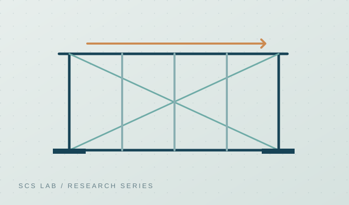
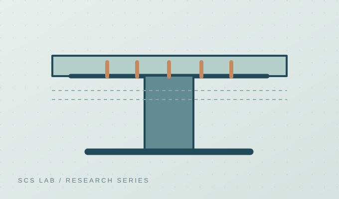
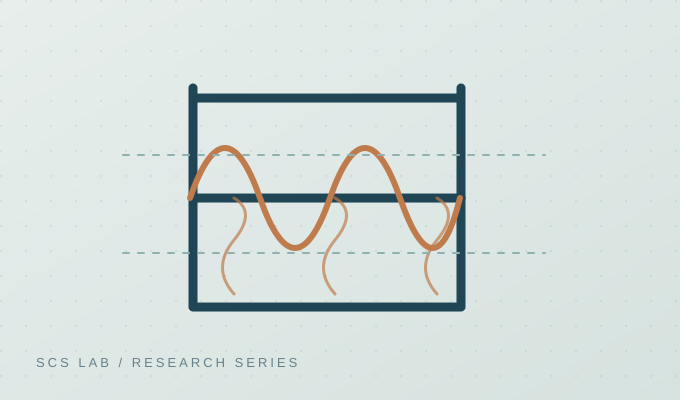
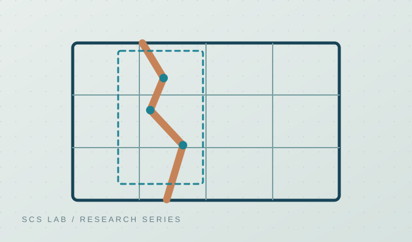
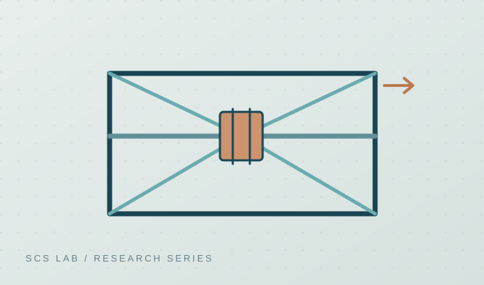

FOCUS AREA / 01
Steel Structures
철골 부재 및 접합부의 비선형 거동, 국부좌굴, 극한강도, 장스팬 구조물 보강법을 연구합니다. 무용접·무천공 방식 보강과 안정성 평가 등 현장 적용 가능성에 주목합니다.
Buckling & Post-bucklingConnectionsStrengthening
재료, 부재, 시스템 및 데이터 분석의 여러 스케일에서 안전하고 효율적인 구조 시스템을 탐구합니다.

철골 부재 및 접합부의 비선형 거동, 국부좌굴, 극한강도, 장스팬 구조물 보강법을 연구합니다. 무용접·무천공 방식 보강과 안정성 평가 등 현장 적용 가능성에 주목합니다.

강재와 콘크리트의 합성효과를 활용하여 새로운 형태의 합성보와 전단연결재, CFT 부재의 구조성능을 연구합니다. 실험과 설계식 비교를 통해 거동 및 설계 적용성을 검토합니다.

구조물의 고온 시 재료특성 및 내화성능, 열전달과 구조응답을 연계하여 검토합니다. 모듈러 구조 시스템과 화재하중 하에서의 안전성을 연구합니다.

CNN을 활용한 콘크리트 균열 식별과 영상 기반 변위·손상 평가 기술을 연구합니다. 구조공학 지식과 컴퓨터 비전 기술을 접목합니다.

마찰형 댐퍼 등 에너지소산장치를 이용한 내진성능 향상과 구조응답 저감을 연구합니다. 비선형 시간이력해석을 통한 거동 평가를 수행합니다.
관찰과 실험, 해석 및 검증을 연결해 구조적 거동을 이해하는 연구 접근방식입니다.
구조물의 성능 요구와 주요 변수, 예상 파괴모드를 설정합니다.
구조실험과 비선형 유한요소해석 등 적합한 방법으로 거동을 분석합니다.
관찰 결과와 분석 결과를 비교해 설계 및 적용 가능성을 검토합니다.
대표 연구 결과 이미지 및 데이터는 공개 가능 여부를 확인한 뒤 추가할 예정입니다.
구조실험, 화재 시험 및 유한요소해석 과정에서 확보한 연구 이미지를 소개합니다.
* 제공받은 실제 연구 이미지입니다. 개별 사진에 대응하는 시험체 명칭, 논문 및 실험 조건은 별도 확인 후 추가합니다. 아래 이미지는 참고용 개요이며 실험 조건을 단정하지 않습니다.